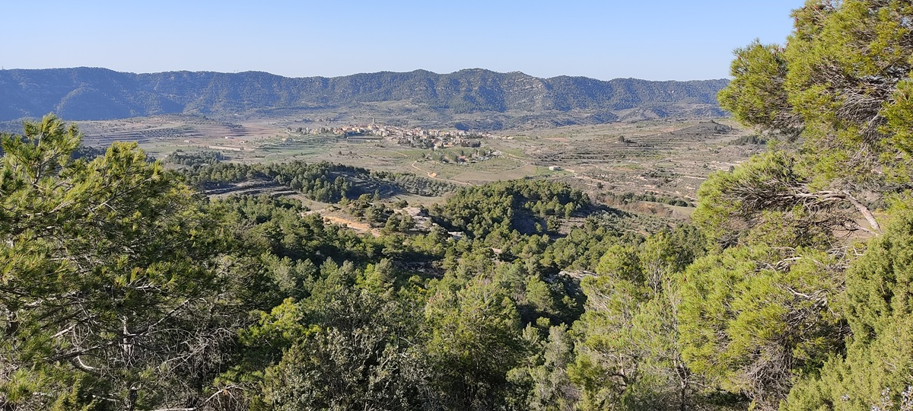
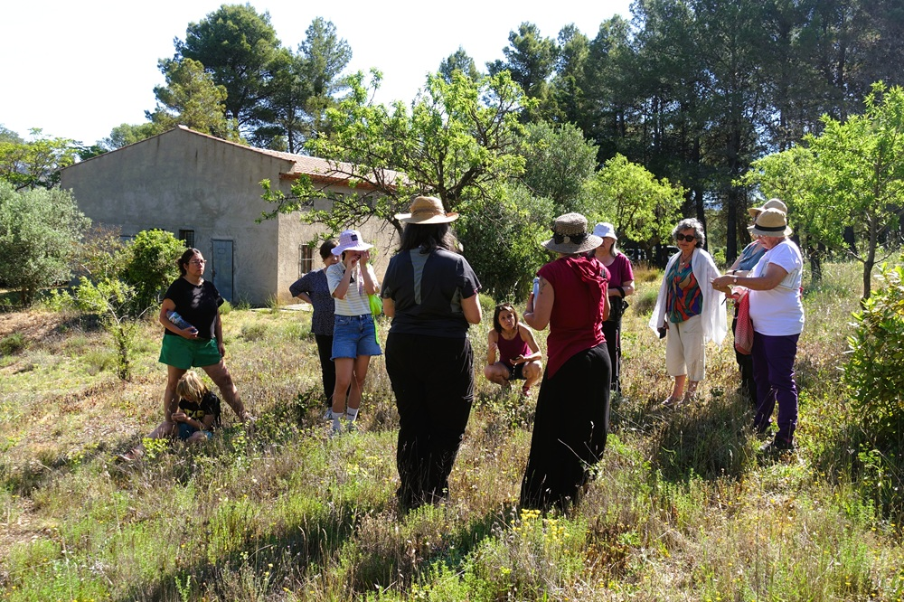

Creem espais per créixer, dialogar, i teixir resiliència
Descobreix les activitats
Som El Pedrís, una associació sense ànim de lucre nascuda de la convicció que les comunitats sanes transformen el món. Acompanyem persones i grups amb eines per al diàleg, la cura mútua i l'acció col·lectiva.
Creiem que la nostra capacitat d'adquirir resiliència comença per aprendre a escoltar-nos, a gestionar els conflictes i a prendre decisions col·laborativament, recordant que la nostra salut va lligada a la salut dels nostres ecosistemes. Necessitem trobar equilibris que ens permetin un futur saludable per nosaltres i els nostres fills i filles.

Petits canvis que s'escampen com papallones.
Processos que creixen des de la terra.
La saviesa viu en els cercles, facilitem espais de diàleg.
Ningú creix sol. La comunitat és la xarxa.
Volem recolzar i afavorir la construcció de comunitats més adaptatives i resilients. Les papallones com a bioindicadores de canvi climàtic ens ofereixen una oportunitat única per explorar camins de transformació personal i comunitària. Creem Efecte Papallona, sumem el nostre humil batec d'ales al de moltes altres per la resiliència col·lectiva.
Les activitats son espais de pràctica, reflexió i connexió. Presencials i participativess.
Eines per expressar-nos des de les necessitats i escoltar l'altre amb empatia profunda. Una connexió més honesta amb mi, amb tu i amb la vida.
Taller · 8hPràctiques de justícia restaurativa per sanar conflictes, enfortir els vincles i la connexió en la comunitat. Espais de conversa profunda on les veus diverses poden ser escoltades.
Formació · 20hAcompanyem processos col·lectius: dinamització, presa de decisions i gestió de la complexitat grupal.
Formació · 12hEspais d'experimentació i creació col·lectiva per posar en valor el nostre entorn i reimaginar el territori. Un exemple viu és el laboratori "La Bellesa d'Ulldemolins", projecte que pertany a la xarxa de la RILCC.
Projecte comunitariSi vols participar en una formació, organitzar un taller per al teu grup o simplement saber més, escriu-nos. Respondrem de pressa.